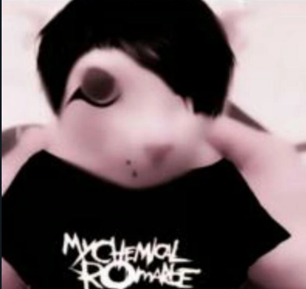

Aquí creemos que todos los animales merecen un hogar lleno de amor. 🐾 En esta página podrás conocer a perros y gatos que buscan una segunda oportunidad, aprender sobre adopción responsable y descubrir cómo puedes ayudar a cambiar vidas. Explora, enamórate y adopta — ¡tu mejor amigo te está esperando! 💕

Adoptar salva vidas. Cada vez que eliges adoptar, le das una segunda oportunidad a un animal que fue abandonado y liberas espacio para que otro pueda ser rescatado. 💖
Comprar fomenta la cría indiscriminada y el abandono. Mientras algunos se venden, miles de animales esperan amor en los refugios. Adopta, no compres
Complete todoslos datos y sus preferencias